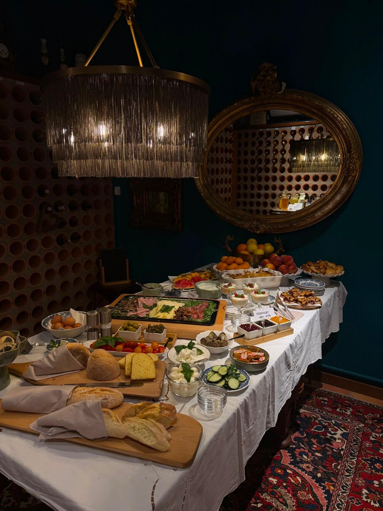

Bakery
Fresh croissants, bread, butter, jam and homemade sweet treats.

Villa Adora · Bled
A generous buffet in one of Bled's most beautiful villas. Open every morning to hotel guests and outside visitors.
Good mornings, simply done
Choose what you like, come back for more, and take your time. Our all-in-one breakfast buffet brings together fresh ingredients, warm favourites and the quiet feeling of a morning by Lake Bled.
Save your table
Reserve ahead for weekends and holidays. We will confirm your table by email.
Questions, answered
Yes. Breakfast at Villa Adora is open to hotel guests and outside visitors.
Breakfast is served every day from 7:30 to 10:30.
We are at Cesta svobode 35 in Bled, a short walk from Lake Bled.
Reservations are recommended for weekends and holidays. Use the reservation form above and we will confirm by email.
Find us
Villa Adora sits right in the heart of Bled, a few minutes' walk from the lake shore. Tap the map to open directions in Google Maps.